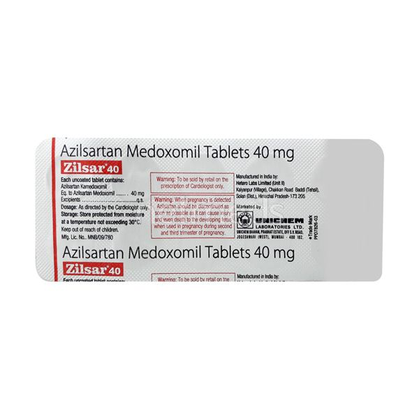

Zilsar 40Mg Tablet, an angiotensin receptor blocker, treats high blood pressure which prevents heart attacks, strokes and kidney problems. It works by relaxing blood vessels to allow blood to flow more easily. Some common side effects may include diarrhoea, dizziness, and increased levels of the enzyme creatine kinase. Seriouseffects like angioedema occur rarely.
Dosage:
Do not use this medicine if you are allergic to any ingredient in Zilsar 40Mg Tablet, if you are pregnant"or if you have "diabetes kidney problems". If you suffer from dehydration, problems more often, or any heart problems let your doctor know before starting the medicine. Also inform him if you have a history of angioedema or electrolyte problems. Some products that interact with this drug include lithium, aliskiren, ACE inhibitors including birth control pillscontaining drospirenone and benazepril.
This medicine can be administered orally as directed by a medical professional, usually once per day with or without food. The dosage is based on your medical condition and response to treatment. For the drug to be most effective, use it regularly and try not to miss a dose.
Main Purpose:
Subsitute:
Below is the list of medicines, which have the same composition, strength and form as Zilsar 40Mg Tablet, and hence can be used as its substitute.
1.Azildac 40Mg Tablet
Zydus Cadila
2.Nexsart 40mg Tablet
Macleods Pharmaceuticals Pvt Ltd
3.Macarbi 40mg Tablet
Macleods Pharmaceuticals Pvt Ltd
4.Zolahart 40Mg Tablet
Mankind Pharma Ltd
Price: 90.Rs (9rs/strip)
10tab in one strip